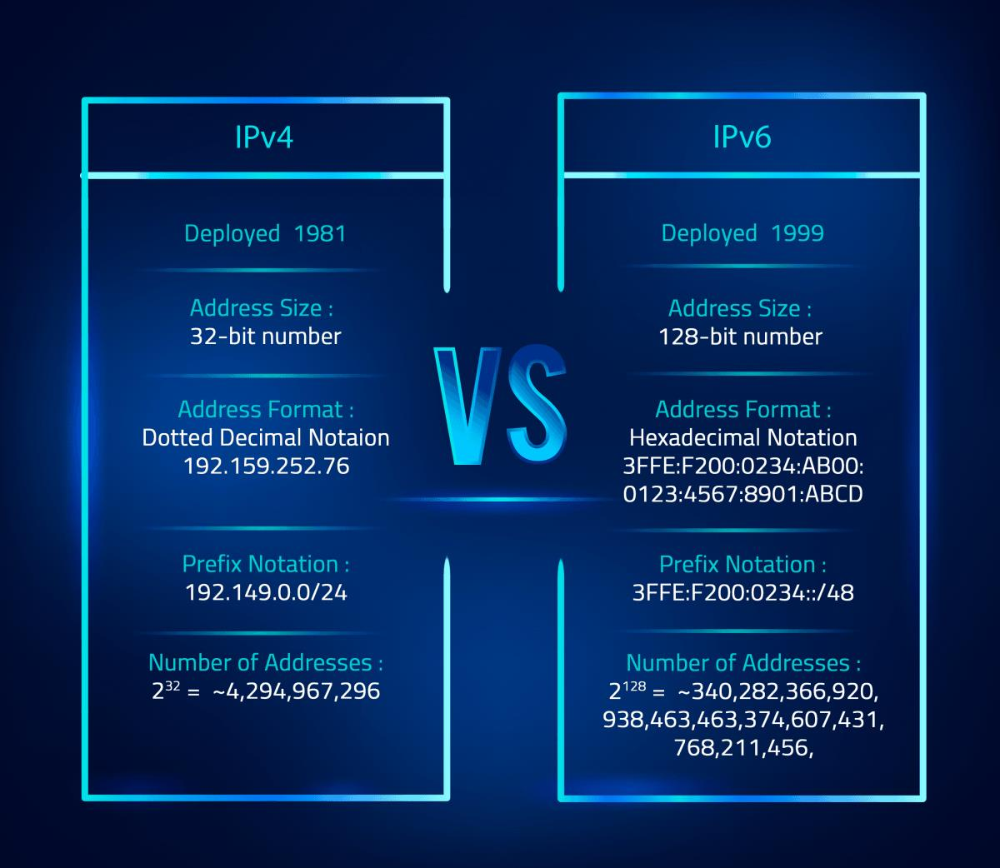

ADRES ÇÖZÜMLEME PROTOKOLÜ (ARP)
Adres Çözümleme Protokolü (Address Resolution Protocol, ARP) ağ katmanı adreslerinin veri bağlantısı katmanı adreslerine (IP adreslerinin MAC adreslerine) çözümlenmesini sağlayan bir telekomünikasyon protokolüdür. 1982 yılında RFC 826 aracılığıyla tanımlanmıştır. STD 37 kodlu bir internet standardıdır.

IPV4 VE IPV6
IPv4'ün bir üst teknolojisi olan IPv6, Internet Protocol'ünün altıncı revizyonudur. IPv6'in görevi de tıpkı IPv4 gibi internete bağlanan cihazlara eşsiz, nümerik bir IP adresi atamak. Fakat, IPv6'nın büyük bir farkı var, o da 128-bit adresleri kullanması.
WEB TASARIM NEDİR
Web tasarımı, web sitesinin arama motorlarında erişilebilirliğini sağlayan, ana hatları ile kişi ve kurumları, ürün ve hizmetleri tanıtan grafik ve metinlerin bir araya geldiği kaliteli bir çalışmadır. Web tasarım nedir? denildiğinde kısaca kişi ve kurumların dijital ortamda görünen yüzü denilebilir.
İnternet tarayıcılarının görüntüleyebileceği bir şekilde özel olarak hazırlanan bir tasarım olan web tasarımı, HTML dilinde olup uzmanlar tarafından yapılır. Bu işi yapan kişilere de web master ya da web tasarımcısı denilir. Web tasarım nedir? sorusuna kişi ve kurumlar için resmi bilgilendirme kanalı da denilebilir. Kaliteli bir web tasarımı, web sitesinin hedef müşteri kitlesini yakalamasında son derece önemli olup özellikle kullanıcı dostu olması gerekir.
Bir web tasarımında web sitesinin kalitesini belirleyen önemli unsurlar bulunur. İlk etapta görsel olarak dikkati çeken unsurlar yanında içerik, özgünlük ve güvenlik gibi noktalar web site kalitesini etkileyen önemli özelliklerdir. Projelendirme, grafik tasarımı, HTML veya CSS kodlama, CMS entegrasyonu ve test işlemleri sonrası web tasarımı tamamlanır. Web tasarım nedir? denildiğinde web sitelerini oluşturma süreci de denilebilir. Şimdi web tasarım unsurlarına tek-tek bakalım:
- Düzen: Web sitesinde kullanılan grafik ve metinlerin gözü yormayacak formatta belli bir düzende olması gerekir. Aranılan bilgiye hızlıca ulaşmada düzen önemlidir. Bu özellik kullanıcının web sitesinde kalma süresini uzatır.
- Renk: Renk seçimi her ne kadar isteğe bağlı olsa da, tercihler marka imajını ve kurumsal kimliği yansıtan renklerden yana olmalıdır.
- Grafikler: Sayfanın açılma hızını olumsuz etkilemeyecek grafiklerin logo, fotoğraf ya da simgelerin kullanılması önemlidir.
- Fontlar: Yazı tipleri web site tasarım kalitesinde son derece etkilidir. Hatta birçok web tarayıcısı web-güvenli yazı tiplerini kaliteli bir şekilde görüntüleyebilir. Bu nedenle kabul gören fontlar tercih edilmelidir.
- İçerik: Görsel ve metinlerden oluşan içerik, ürün ve hizmet tanıtımında okuyucuda merak uyandıran, bilgilendirici ve seo uyumlu olmalıdır. İçeriğin konu ile ilgili anahtar kelimeler içermesi, arama motoru optimizasyonu olan seo için önemlidir.
WEB TASARIM PROGRAMLARI
- Visual Studio Code
- Notepad
- Adobe XD
- Gimp
- Notepad++
- Javascrip
- node.js
WEB SITE DILLERI

- Java
- Css
- Python
- Php
- Asp
- Ajax
- Ruby
- Coldfusion
SUNUCU TARAFLI PROGRAMLAMA VE SCRIPT (Server Side Programming and Script)
Sunucu taraflı script ise bu programlama dilleri ile oluşturulmuş, sunucu tarafında çalışan ve sonucu kullanıcıya gösterilen işlemlerdir. Sunucu taraflı programlama dillerinden bazıları ise şunlardır;
- PHP
- PYTHON
- JAVA
- RUBY
- ASP.net
İstemci Taraflı Programlama ve Script (Client Side Programming and Script)
Bu kodlar genellikle sunucu ileiletişim kurmadan direk kullanıcının tarayıcısı yardımı ile çalışırlar ve sonuç döndürürler. Bu kodların yazılmasına istemci taraflı programlama, yazılan kodlar sonucu oluşan script’e istemci taraflıscript denir.
Css
JavaScript
WEB TASARIM TERİMLERİ
HOSTING:
İnternet ortamındaki tüm veri ve bilgilerin bir bilgisayar ortamında tutulması ya da barındırılması manasına gelmektedir.
DOMAİN NAME:
Alan adı; internet üzerinde kelimelerin ya da rakamların tescil edildiği isimlerdir.
Domain (alan adı); hatırlanması zor olan IP adresleri yerine kullanılması için internet otoriteleri tarafından geliştirilen bir isimlendirme yöntemidir. Siteniz için seçtiğiniz ismin; .com, .net gibi bir uzantıyla kullanılan haline alan adı ya da domain denmektedir.
Domain için yapılabilecek en doğru tanımlardan biri de “sitenizin adı ve adresi” şeklinde yapılan tanımdır çünkü kullanıcılar sitenize alan adınızı kullanarak ulaşır.
FTP:
Açılımı File Transfer Protocol olan FTP’nin Türkçe karşılığı Dosya Transfer Protokolü’dür. İsminden de anlaşılabileceği gibi internete bağlı iki bilgisayar arasında dosya transferini sağlayan bir protokol ve bu işleme hizmet eden uygulamaya verilen isimdir. Örneğin bir web sitende yer alması istenen dosyalar sunuculara FTP üzerinden aktarılabilir. FTP ilk geliştirilen internet protokollerinden biridir. FTP protokolü ile;
1) Bir başka bilgisayardan bir başka bilgisayara dosya aktarımı yapılırken, o bilgisayar ile etkileşimi aynı anda bağlantı kurulur.
2) Protokol ile sağlanan bir dizi komutlar yardımıyla iki bilgisayar arasında dosya alma/gönderme işlemleri yapılır.

SEO:
Arama Motoru Optimizasyonu (SEO), Web sitelerinin arama motorlarında daha iyi performans göstermesi için yapılan çalışmaların tümüne verilen isimdir.
SEO aynı zamanda Arama Motoru Optimizasyonu’nun İngilizce karşılığı olan Search Engine Optimization (SEO) kelimelerinin kısaltılmış biçimidir.
Web sitenizin arama motoru sonuç sayfasında (SERP) daha iyi sıralamalar elde etmesi için sürekli geliştirmeler yapma sürecidir. SEO sayesinde web sitenizin performansını artırabilir daha fazla ziyaretçiye ulaşabilirsiniz.
URL:
URL, Uniform Resource Loader teriminin kısaltılmış halidir. Bu terimin Türkçe karşılığı ise “Tekdüzen Kaynak Bulucu”dur. URL, internet üzerindeki bir kaynağın yerini belirtmek amacıyla kullanılır. URL, tarayıcınızda bulunan, site adresinin belirtildiği çubukta yer alan bilgidir diye biliriz. Örneğin, https://www.alkanmca.com/ bir URL’dir. Bir URL’nin tüm tarayıcılarda düzgün bir şekilde görüntülenebilmesi için 2.083 karakteri geçmemesi gerekmektedir.
SSL:
SSL internet ortamında çok karşılaşılan kavramlardan biridir. Genellikle alışveriş sitelerinde oldukça sık rastlanmaktadır.
SSL’in açılımı Secure Socket Layer‘dır. Türkçe anlamıysa Güvenli Giriş Katmanı‘dır.
SSL kişisel gizlilik ve güvenilirlik sağlayan, network üzerindeki bilgi transferi sırasında bilginin bütünlüğü ve gizliliği (data protection) için sunucu ile istemci arasındaki iletişimin şifrelenmiş şekilde yapılabilmesine imkan veren bu sayede gizliliğinin ve bütünlüğün korunmasını sağlayan Netscape tarafından geliştirilmiş bir güvenlik protokolüdür diye tanımlayabiliriz.
Başa Dön
2